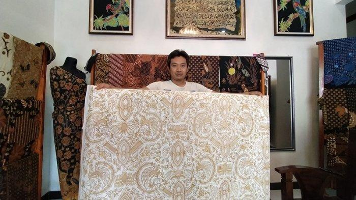

Tradisi Mandhasiya merupakan sebuah tradisi upacara adat berupa sedekah bumi yang dilakukan guna terhindar dari malapetaka seperti wabah penyakit dan hama yang sulit ditanggulangi. Oleh karena itu, tradisi Mandhasyia masih tetap dilakukan pada masa modern seperti sekarang ini. Tradisi Mandhasiya ini dapat ditemui di Dusun Pancot, Kelurahan Kalisoro, Kecamatan Tawangmangu, Kabupaten Karanganyar, Jawa Tengah.
Tradisi Mandhasiya sendiri sudah ditetapkan oleh Kementrian Pendidikan Kebudayaan Riset dan Teknologi (Kemendikbud Ristek) pada tahun 2021 sebagai Warisan Budaya Tak Benda (WBTB). Tradisi Mandhasiya dilakukan setiap 7 bulan sekali pada Selasa Kliwon, wuku Mandhasiya di Desa Pancot, Kecamatan Tawangmangu yang berpusat di Punden Balai Pathokan. Di tempat ini terdapat Watu Gilang yang diyakini sebagai tempat dibenturkannya kepala Prabu Baka oleh Putri Tetuka. Pada tradisi Mandhasiya terdapat dua tahapan, yaitu tahap pra upacara dan tahap proses upacara.
Wahyu kliyu merupakan upacara adat tepatnya di Dusun Kendal, Desa Jatipuro, Karanganyar, Jawa Tengah sebagai upacara tolak bala. Upacara adat ini diperingati setiap bulan suro tanggal 15, dimana pelaksanaanya ditengah malam pada saat bulan purnama. Wahyu kliyu ini berupa upacara sebaran kue apem yang terbuat dari adonan tepung beras yang digoreng dengan minyak kelapa. Setiap kepala keluarga diwajibkan membuat 344 buah kue apem yang kemudian dimasukkan kedalam tenggok (wadah yang terbuat dari anyaman bambu) dan selanjutnya dibawa ketempat diadakannya wahyu kliyu.
Alasan mengapa upacara adat ini menggunakan kue apem sebagai medianya karena menurut filosofi jawa kue apem merupakan simbol permohonan ampun atas kesalahan. Selain membawa kue apem, warga juga diwajibkan membawa selembar daun pisang yang nantinya digunakan untuk alas dan tutup saat sebaran kue apem berlangsung.

Upacara Dukutan merupakan ritual tradisi yang sudah turun-temurun dilakukan masyarakat Desa Nglurah, Kecamatan Tawangmangu, Kabupaten Karanganyar. Upacara tersebut dilaksanakan setiap Wuku Dukut dalam penanggalan Jawa setiap selasa kliwon.
Pada puncak prosesi upacara, dilaksankan tawur agung yakni lempar sesaji berupa hasil bumi seperti jagung, ketela dan buah-buahan.
Musim giling tebu sudah dimulai. Ada sebuah ritual unik untuk menyambut musim giling tebu itu. Tradisi tersebut disebut cembengan. Satu perusahaan pabrik gula yang masih mempertahankan cembengan adalah Pabrik Gula Tasikmadu, Karanganyar, Jawa Tengah. Tradisi ini dilaksanakan selama 2 hari. Hari pertama diisi arak-arakan sesaji. Arak-arakan dari halaman balai desa Suruh hingga pabrik gula, kira-kira lima kilometer jauhnya. Setelah sampai di pabrik, sesaji ini kemudian diletakkan di bagian bawah mesin produksi. Hari kedua menjadi bagian dari prosesi puncak cembengan, yaitu tebu manten.
Seperti saat arak-arakan kepala kerbau, saat ritual tebu manten ini banyak warga ikut melihat. Di pinggir jalan yang dilalui kirab tebu manten, warga menanti arak-arakan. Rute arak-arakan serupa dengan iringan sesaji kepala kerbau. Begitu kirab tebu manten sampai di depan pabrik gula, kesenian reog menyambutnya. Lantas, tebu manten ini masuk ke ruang giling dan kemudian diletakkan di atas mesin giling yang disusul belasan pasang tebu pengiringnya

Kesenian batik Karanganyar yang terkenal adalah batik Girilayu yang berasal dari Desa Girilayu, Kecamatan Matesih. Desa Girilayu dikenal sejumlah motif batik klasik dengan gaya Pura Mangkunegaran.Motif batik Gerilayu mendapat pengaruh dari batik Solo, khususnya dari Keraton Mangkunegaran. Mulai dari motif, tekhnik pembatikan, hingga pewarnaannya.